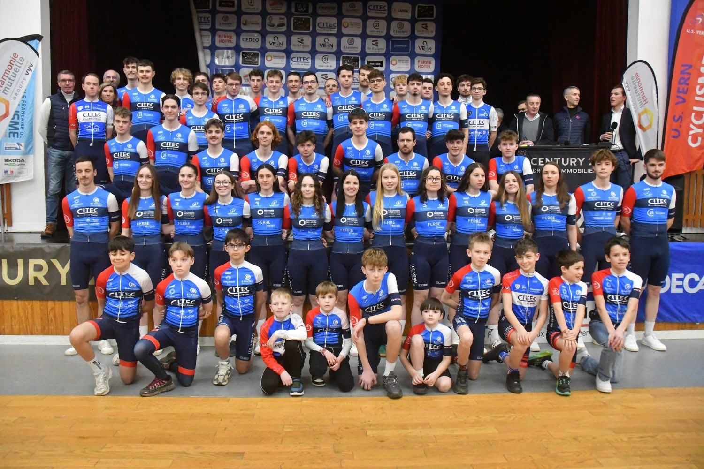
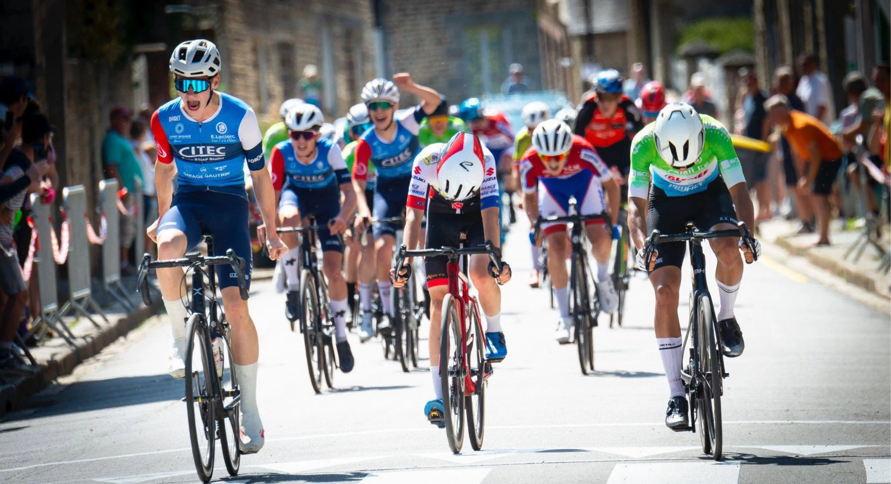
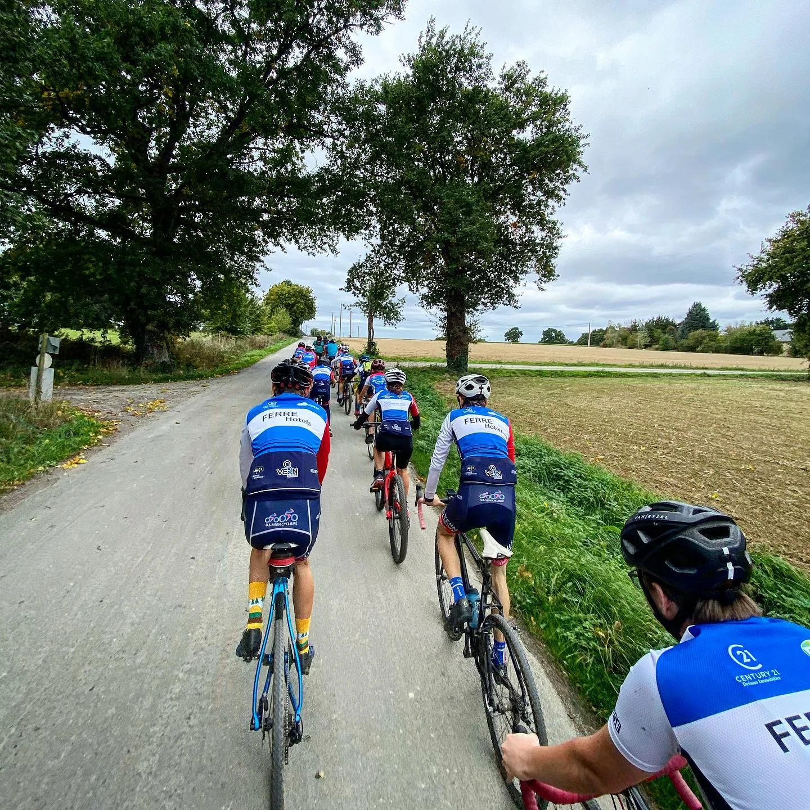
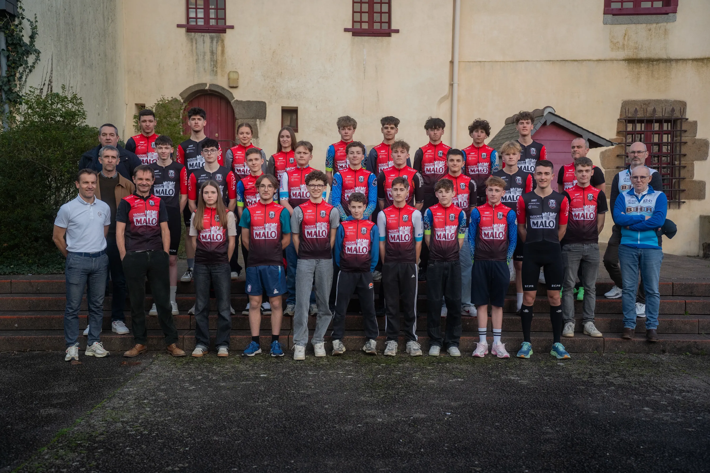

Route, VTT, cyclo-cross et plus encore !
Créée en 1976, l'Union Sportive de Vern Cyclisme est aujourd'hui sous les commandes de Mickaël Guillard et compte plus de 160 licenciés, des écoles de cyclisme jusqu’aux séniors.
Engagé dans la formation des jeunes et le développement du cyclisme féminin, le club a été le premier en Bretagne à créer une division nationale féminine en 2018. En 2025, l'US Vern a inauguré son magnifique "Stade Vélo" à la Vallée de la Seiche, dédié à l'apprentissage en toute sécurité.


Au cœur de notre ADN

Des moments conviviaux

S'entraîner en toute sécurité

Former la relève de demain
L'Entente Cycliste du Pays Rennais
L'US Vern Cyclisme est membre de l'ECPR. Ce beau projet rassemble les forces de plusieurs clubs bretons pour permettre à nos coureurs de briller sur les plus grandes courses du calendrier, grâce à une logistique mutualisée et un fort esprit d'équipe interclubs.
Découvrir l'Entente